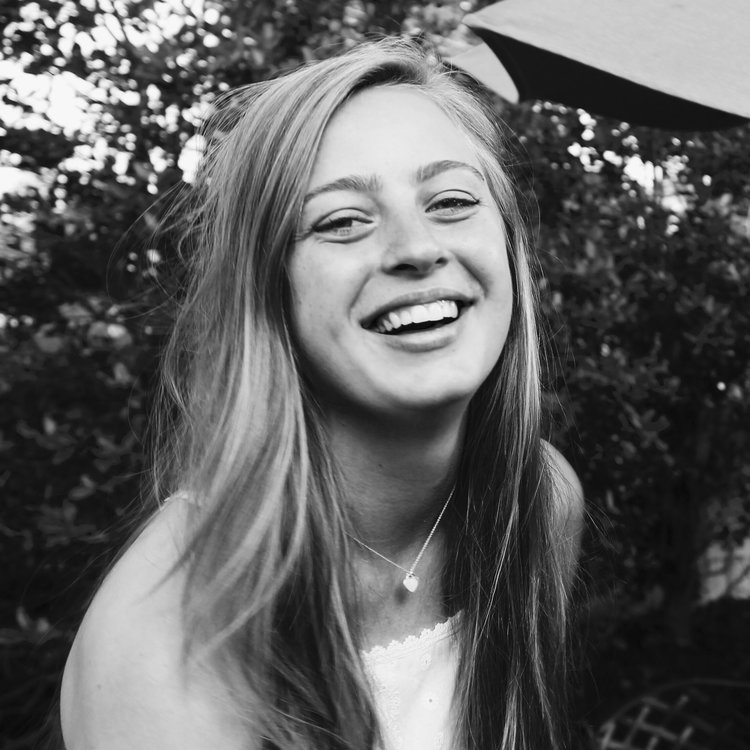

SUMMARY Student-athlete at Carnegie Mellon University. Interested in architectural sustainability and the effects of architecture
and design engineering on the human condition and the environment, strives to broaden her knowledge in various
sectors of the realm of architecture as a first year student in the School of Architecture. EDUCATION/HONORS CARNEGIE MELLON UNIVERSITY - PITTSBURGH, PA College of Fine Arts School of Architecture Bachelor of Architecture Class of 2021 GPA: 3.57/4.0 - Dean’s List Studio GPA - 4.0/4.0 CENTRAL BUCKS HIGH SCHOOL EAST - DOYLESTOWN, PA Summa Cum Laude - Class of 2016 President’s Education Awards Program National US Army Reserve Scholar Athlete President/Co-founder of CHAIN (Coalition Helping Athletes in Need) National Art Honor Society member PROFESSIONAL/ACADEMIC EXPERIENCE RELEVANT COURSES COMPLETED Studio 1 Foundation Wedding Pavilion Final Project Incorporated newfound knowledge of spacial relatonships between structure and landscape. Followed a
program whilst implementing own design through creation of projection, reflection, and strategic
application of material. Analog/Digital Media Developed technical and free hand drawing techniques. Applied knowledge of Adobe programs and Rhino to
coursework in studio as well as for seperate projects. Carnegie Mellon University Pre-College Architecture Program Summer 2015 - 3 Week Program Introduced valuable skills and tools to be used in future years of study. Experienced first-year studio culture. ADDITIONAL SKILLS/INVOLVEMENT CLUBS AND PROGRAMS 2016-Present PR Liaison and Photographer of AIAS CMU chapter (American Institute of Architecture Students) Women’s Track and Field Team Camp Kesem Fundraising Committee Kappa Kappa Gamma Fraternity Philanthropy Committee Summer 2015 Volunteer on Cuba mission trip through ARCC (Adventures Cross Country) DIGITAL VRay for Rhino Photoshop In Design Illustrator ANALOG Perspective Drawing Rendering Drafting FABRICATION Woodshop
